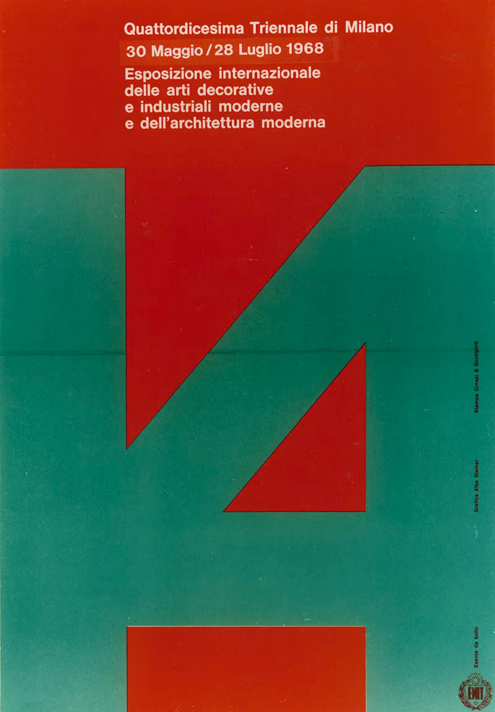

Coop 1
Locandina per il primo negozio alimentare Coop aperto a Reggio Emilia, Emilia-Romagna. L'intera identità, compreso il logotipo, è stata disegnata da Albe Steiner.
Albe Steiner, 1963
Manifesto
Altri Progetti

Mostra della Ricostruzione
Albe Steiner, 1945
Manifesto

T14
Albe Steiner, 1968
Manifesto

Interiors
Albe Steiner, 1948
Periodico

Contenitori Pirelli
Albe Steiner, 1959
Manifesto

Compasso d'Oro
Albe Steiner, 1954
Marchio